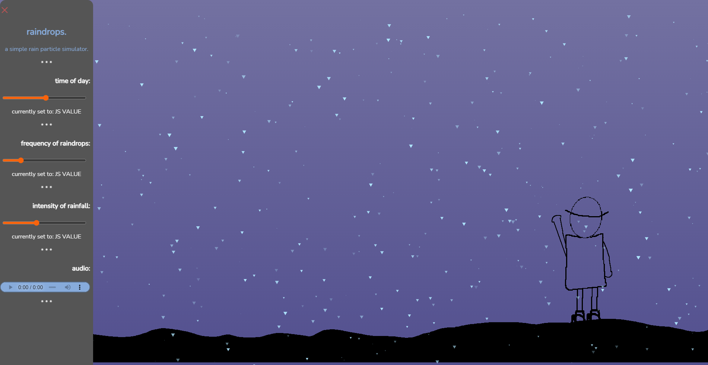

> programming projects.
Here you'll be able to see a list of all the programming projects I have worked on throughout my time at college and during my free time.
Alternatively, you could visit my github page to view the repositiories i have created there - the majority of them will be documented here with some information alongside.
Here they will be sorted by the data they were completed. with the latest being at the top of the list.
raindrops. (A HTML / Js / CSS project)
> raindrops.
this is a simple web application simulating rain falling
|
 A screenshot of the UI of the web application. as a side note, the slider color in this screenshot were the accent colors assigned on windows.. this will change depending on the user's settings. |
Synopsis of Project:This was a project i wanted to try and make when i saw someone else try to make their own web app. It's quite simple. Features of project
|
click here to go to the web app!
Flashcard Creator (A C# Windows forms project)
> Flashcard Creator
this is a relatively small flashcard creator application.
 A screenshot of the revising card window within the project |
Synopsis of Project:This was a project undertaken during my time time at college, where it was my college coursework. It is a revision aid, allowing the user to create flashcards and add them to decks, which they can then revise from. Features of project
As this project was for coursework in college, i also had to create an extensive analysis of the project as I worked on it, this included the background of the project and the programming techniques used. It also details the testing which occurred during the creation of the program. |
click here to go to the github repsitory.
DiceTD (A GDscript project)
> DiceTD
A small game made for a college extra curricular.
 A screenshot taken partway through a game. |
Synopsis of Project:This was a project undertaken during my time at college, it was completed during an extra curricular called 'Introduction to Game Design' Features of project
|
click here to go to the github repsitory.
Halloween Text Based Adventure (A simple C# console project)
> Halloween Text Based Adventure.
a relatively simple text based adventure game (which could do with a better name).
 A screenshot taken partway through the game. |
Synopsis of Project:This was a simple C# project mainly using string interpolation and concatenation. It was created for a homework assignment for computer science. Features of project
|
click here to go to the github repsitory.